Chat stays open when time runs out.
Overview
Fritter is a redesign of the social feed built around a single idea: people should be able to say what they want to see, and understand why they're seeing it. I ran the project end to end — teardown of the incumbent, two user interviews, six concepts, three shipped features, peer critique, and a working frontend and backend.
Tearing down the incumbent
Before proposing anything, I audited how Twitter actually behaves — what it rewards, what it hides, and where its design creates harm. I looked at accessibility affordances, engagement mechanics, and the way controversy propagates through quote-tweeting.
The finding that shaped everything after: the platform treats all engagement as positive signal. A quote-tweet written to condemn a post boosts that post exactly as much as one written to endorse it. The system has no concept of the user's intent — so outrage and agreement are indistinguishable inputs to the same ranking function.
What the platform gets right is worth naming too. Hashtags, bios, and threads make it genuinely possible to find people like you, and accessibility affordances have improved steadily. Any redesign had to preserve that discovery capability while fixing the ranking opacity underneath it.
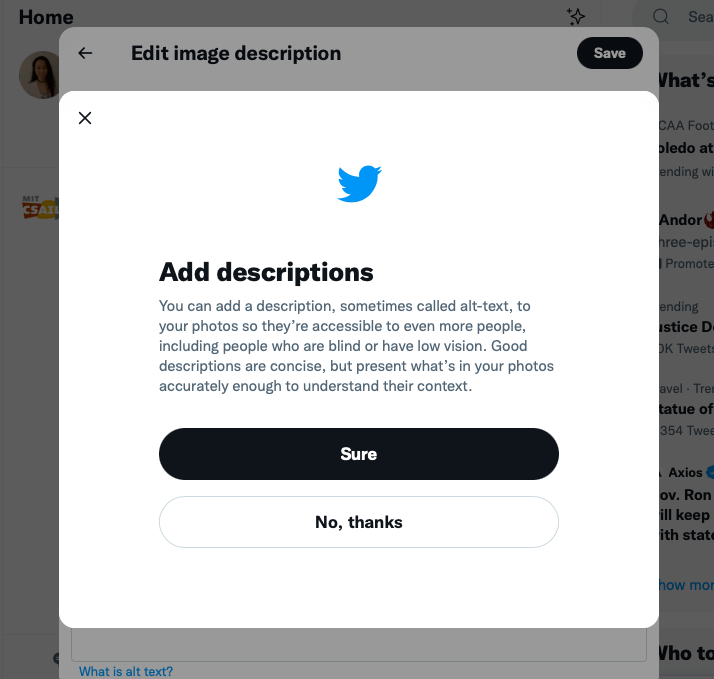
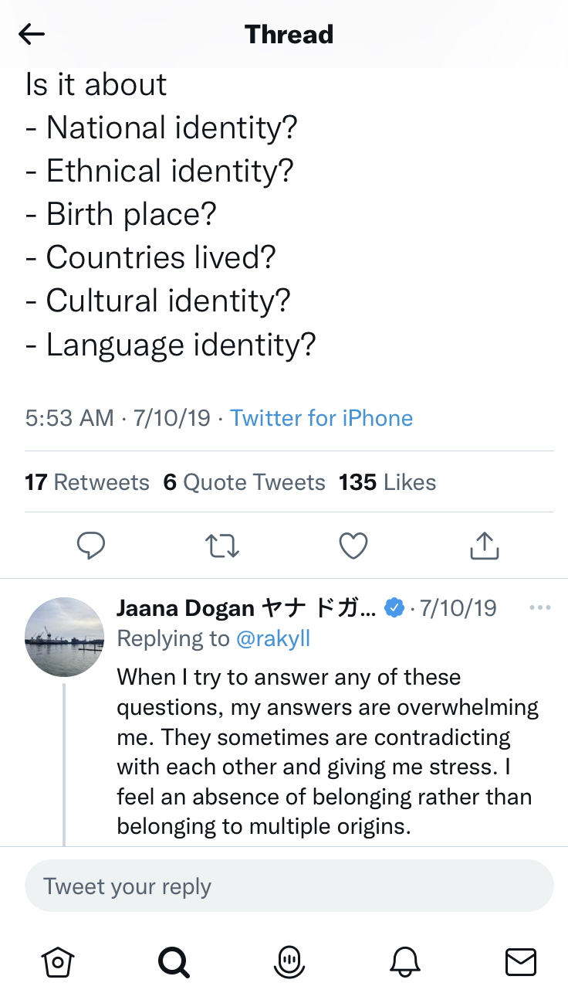
Defining who to talk to, and why
I wrote selection criteria before recruiting anyone, so the sample would stretch across the dimensions most likely to change how someone experiences a feed:
- Personal background — lived experience that shapes what community means online
- Academic background — inside and outside my own institution and discipline, so the sample wasn't a mirror
- Belief background — people who identify strongly with a religious or political community, to test whether the feed builds or breaks echo chambers
I then deliberately recruited two participants who sat at opposite ends of usage: one light user who mostly posts, one heavy user who mostly browses. If both reported the same frustration, that frustration was structural rather than personal.
Two interviews, opposite ends of the spectrum
Joined recently on a mentor's recommendation. Uses the platform to find community and share resources, and is deliberate about what she reveals. Values hashtags and bios as the connective tissue that makes finding people possible.
"If you want to talk to another disabled person, you can just search them up… through these hashtags you can find community and share resources."
Years of daily use, mostly scrolling for news, sport, and politics. Likes the speed and the ease of skipping past things. Aware the habit has gotten away from him, and frustrated that the feed gives him no dial to turn.
"I wish there's more user choice for what's popping up… it would be nice if user has input to a curated content, not just the algorithm."
Where two very different users converged
Participant A wanted reach without exposure — community access without surrendering privacy. Participant B wanted speed without capture — quick information without the compulsive pull. On the surface, opposite problems.
Both, however, described the same underlying cause: they had no say in how the feed was assembled, and no visibility into why any given post appeared. Participant A put the mechanism plainly — the algorithm "does not tell you whether things are bad engagement or good engagement." Participant B described the consequence: "if you lean one way directly, you are probably going to interact with only people sharing the same mindset."
A light sharer and a heavy browser, with nothing else in common, both asked for the same thing: explicit input into curation. Opacity wasn't a preference problem, it was a structural one — which meant the fix belonged in the mechanism, not in the settings menu.
Six concepts
Each concept got a stated purpose and an operating principle — what it's for, and exactly what happens when someone uses it. Three adapted existing patterns, three invented new ones.
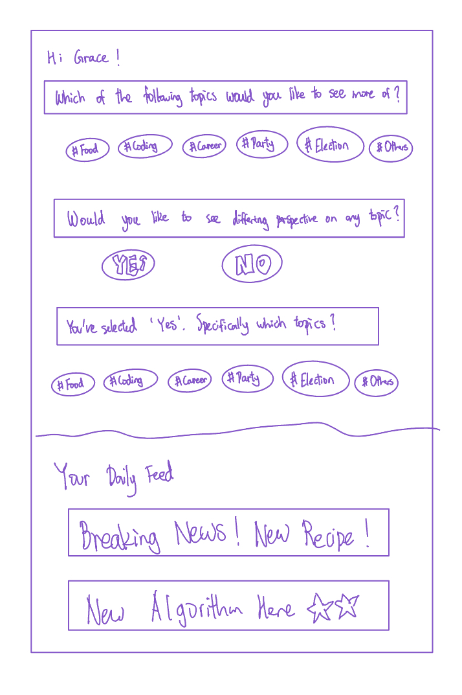
Ask people directly what they want more of, and whether they want opposing views — then curate from the answer.
Shipped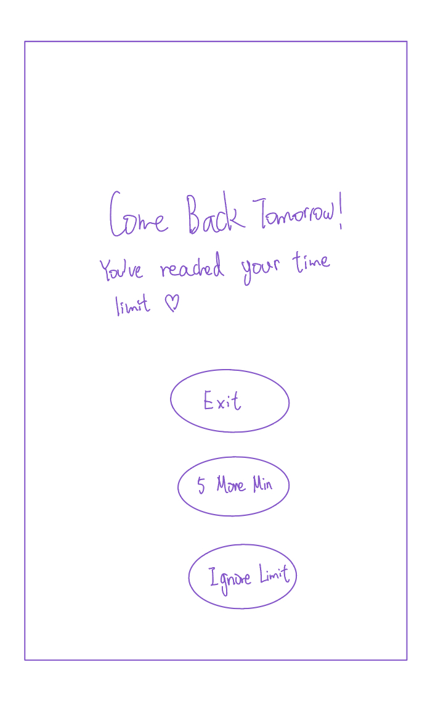
A self-set daily cap, borrowed from iOS Screen Time, with a soft "five more minutes" override.
Shipped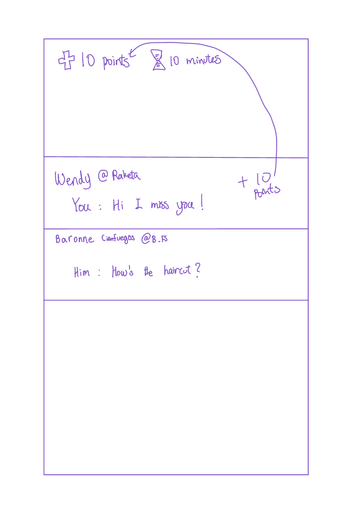
Earn browsing minutes by messaging friends, so the currency of the app is conversation rather than consumption.
Shipped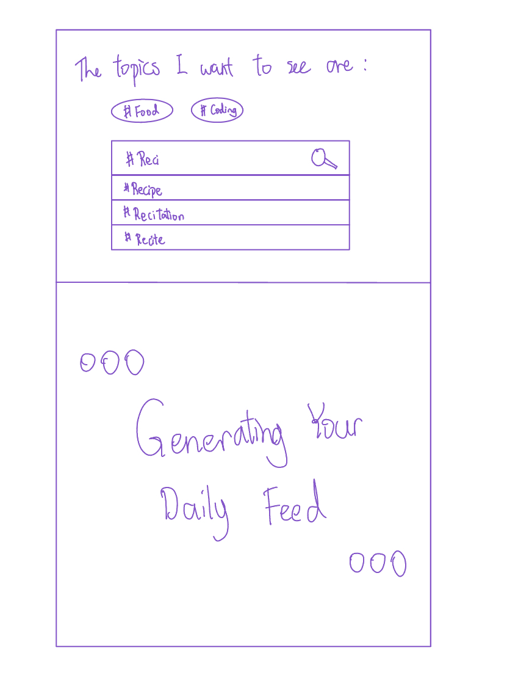
Fifty posts a day, chosen by topic, each vanishing as you scroll past it. Empty feed until tomorrow.
Cut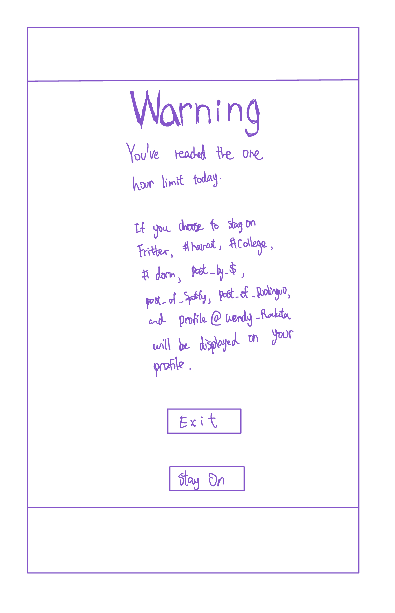
Exceed your limit and the app publishes your recent searches and most-visited profiles to your page.
Cut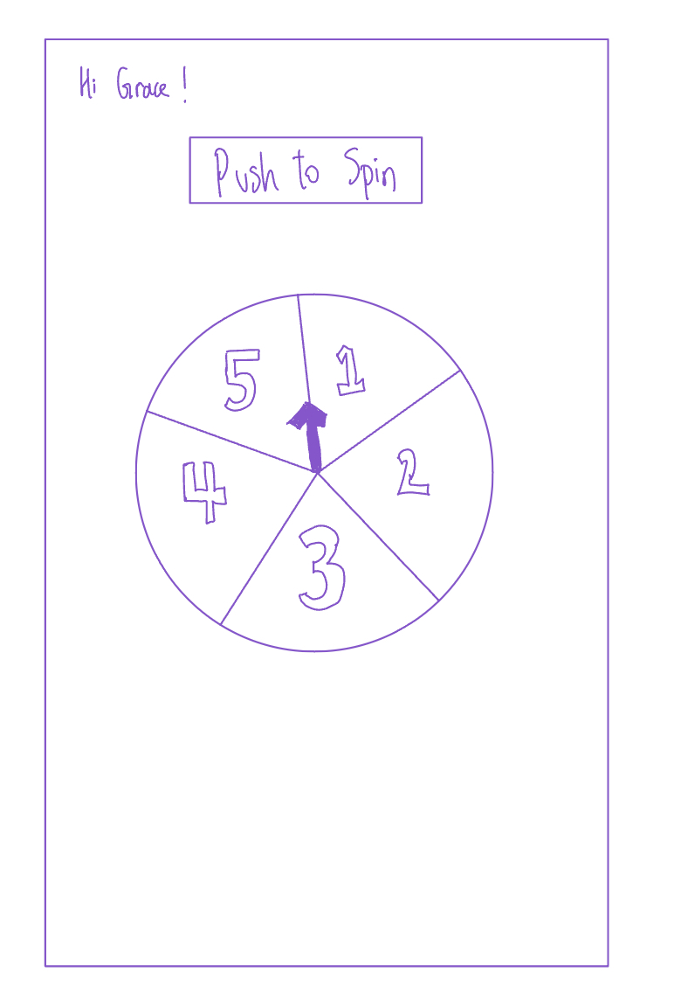
Spin to pick one of five randomized bundles drawn from the hashtags you follow.
CutThree in, three out
The three I cut are the more interesting half of the decision.
| Concept | Call | Reasoning |
|---|---|---|
| Periodic survey | Shipped | The only concept that gave direct, explicit input into curation — the exact thing both participants asked for. Daily framing also let intent change day to day. |
| Reward system | Shipped | Turned time on the app into something you earn through conversation, addressing the compulsion without simply locking people out. |
| Time limit | Shipped | Kept opt-in by design. It exists for people who want a brake, and stays invisible to those who don't. |
| Public search history | Cut | It works by shame, and shame is unevenly distributed — plenty of users simply wouldn't care, which defeats the mechanism for exactly the people it targets. It also cut against the goal of making the app feel socially safe. |
| Disappearing content | Cut | Ephemerality undercuts the reason to post at all: what's the point of being here if nothing you share is preserved? Participant A's use case — sharing resources others can find later — dies under this model. |
| Spinning wheel | Cut | Randomization makes the mechanism visible without making it controllable. It's transparency theatre, and the survey already delivered real agency. |
Specifying the system
Each feature was decomposed into concepts with an explicit purpose, state, and set of actions, then synchronized. Writing the state model surfaced conflicts between features long before any of it was built.
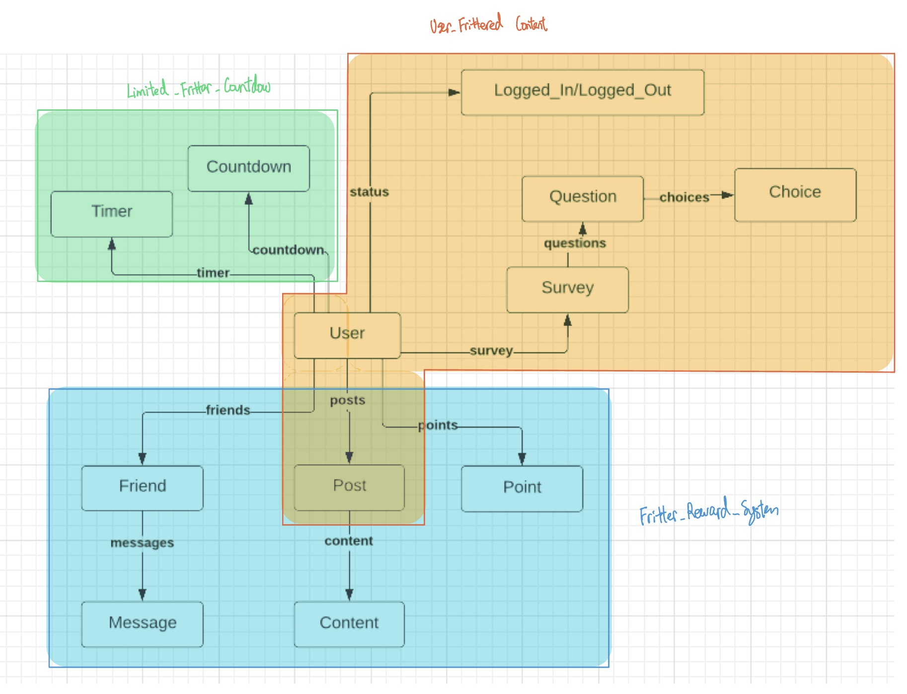
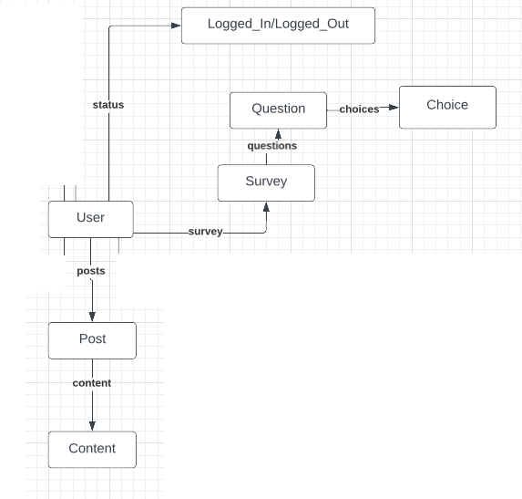
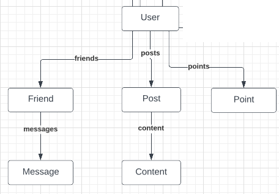
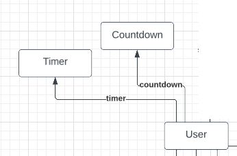
What critique changed
I reviewed four classmates' designs against concept independence, efficacy, simplicity, and synchronization, and had mine reviewed on the same axes. Four criticisms landed, and each produced a specific change:
One I pushed back on
Two reviewers argued that public-by-default posting would induce anxiety and discourage people from posting. I kept it. The goal was never for everyone to post — quieter users can browse and use chat, both first-class paths through the app. Making posts public is what creates the shared surface that community forms on, and Participant A's entire use case depended on strangers being able to find her.
Shipping it
I built the design out as a working application — Vue and TypeScript on the front end, Express and MongoDB behind it.
The daily survey, and the feed it produces. You can always trace a post back to an answer you gave.
Messaging a friend earns browsing minutes. Posts stay locked until you've spent some of them.
A self-set daily cap on browsing, with chat deliberately exempt from the clock.
What I'd do differently
I'd validate the reward mechanic with users before specifying it. I designed it from a principle — conversation over consumption — and only found the spam loophole once it reached critique. A handful of concept tests would have surfaced that a week earlier, and cheaply.
I'd also treat the daily survey as a hypothesis rather than a settled feature. Cost of operation was the criticism I most underestimated: I was so focused on giving people control that I didn't count what exercising that control would cost them every single morning. Agency isn't free, and a design that demands it daily has to earn the interruption.
Research participants are referred to as Participant A and Participant B. Names and identifying details have been removed or generalized; quotes are preserved except where they contained identifying information.